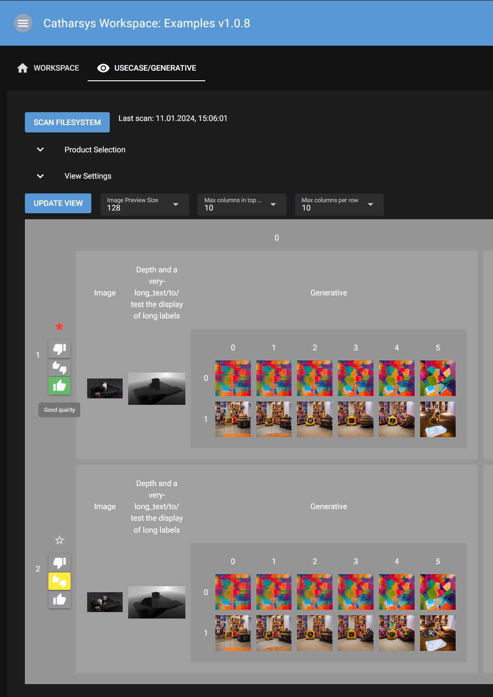

Production Categorization#
It can be helpful to annotate the generated data with respect to a set of user defined categories. With the Catharsys production viewer, categories can be defined and associated with path structure variables and set in the web view. The annotations are stored in a JSON file in the _output/[os user]/[web user] directory of the corresponding workspace. The os-user is the user logged into the OS and the web-user is the user logged into the Catharsys web GUI. If no explicit web users were created, the web-user is public.
For example, the user can define a boolean category ‘bad’ for a ‘frame’ variable, so that bad frames can be marked in the viewer.
The following examples are taken from production configuration of the usecase/generative configuration of the image-render-workspace-examples module.
Category Definition#
Categories are defined in the production.json configuration file per group under the tag mCategories. Here is an example definition of a boolean category ‘bad’:
"mCategories": {
// User defined category 'bad'
"bad": {
// The DTI of the category. In this case, it is a boolean category.
"sDTI": "/catharsys/production/category/boolean:1.0",
// The name of the category, used for display
"sName": "Do not use",
// optional, default value, if not set, the default value is false
"bDefautValue": false,
// the icon to use when the value is true.
// The available icon names can be found here: https://fonts.google.com/icons?icon.set=Material+Icons
"sIconTrue": "star",
// the icon to use when the value is false.
"sIconFalse": "star_border",
// the color to use when the value is true.
"sIconColor": "red",
},
}
Suppose the path structure looks like this:
"sPathStructure": "!production/!rq/!project/?idx",
and the variable idx is to be annotated with the category ‘bad’, then the variable definition looks like this:
"mVars": {
"idx": {
"sName": "Configuration Index",
"lCategories": ["bad"],
},
},
The element lCategories defines a list of categories that can be used for this variable. The following image shows how this category is visualized in the viewer. The row labels shown in the first column now have a star icon next to the label, which can be checked/unchecked by the user. The value of the sName element is shown as tooltip, when the mouse hovers over icon.
Categories for Catharsys Variables#
You can also associate categories with variables pre-defined by the Catharsys system, like the !frame variable. This is done in the optional mSystemVars block. For example, to associate the ‘bad’ category with the !frame variable, the block would look like this:
// The 'mSystenVars' block is optional. It can be used to define
// categories for the Catharsys system variables.
"mSystemVars": {
// The 'frame' variable is a Catharsys system variable.
// It is used to define the frame of the production.
"frame": {
// currently, only the 'lCategories' array is supported.
"lCategories": ["bad"],
}
},
Category Type: Boolean Group#
Another category type next to the boolean, is a boolean group, which allows the user to select one from a set of values. Here is an example for a three state selection:
"mCategories": {
// User defined category 'quality'
"quality": {
// The DTI of the category. In this case, it is a boolean group category.
// The boolean group category is used to define a set of values for a variable.
// The values are defined in the 'lGroup' array.
"sDTI": "/catharsys/production/category/boolean-group:1.0",
// The name of the category, used for display
"sName": "Quality",
// optional, default value, if not set, the default value is the first value of the 'lGroup' array.
"iDefaultValue": 1,
// The 'lGroup' array defines the values of the category.
"lGroup": [
{
// The description of the value, used for display (tooltip)
"sDescription": "Low quality",
// The icon to use for the value.
"sIcon": "thumb_down",
// The color to use for the value.
"sColor": "red"
},
{
// The description of the value, used for display (tooltip)
"sDescription": "Medium quality",
// The icon to use for the value.
"sIcon": "thumbs_up_down",
// The color to use for the value.
"sColor": "yellow"
},
{
// The description of the value, used for display (tooltip)
"sDescription": "Good quality",
// The icon to use for the value.
"sIcon": "thumb_up",
// The color to use for the value.
"sColor": "green"
}
]
}
}
To associate the categories ‘bad’ and ‘quality’ with the variable idx the variable definition has to look like this:
"mVars": {
"idx": {
"sName": "Configuration Index",
"lCategories": ["bad", "quality"],
},
},
The visualization of this additional category looks like this:
User to System Variable Association#
A Catharsys action or other custom processing may result in per-frame artefacts that do not conform with the default frame name format Frame_[XXXX].[ext]. However, it is useful to associate such artefacts with the Catharsys system variable !frame so that they are grouped together in the visualization. This can be done by defining an artefact specific user variable with the same name as the pre-defined Catharsys variable, but with an appropriate regular expression for parsing. Here is an example of an artefact definition that uses this feature by defining a user variable frame:
"mArtefacts": {
"gen": {
"sDTI": "/catharsys/production/artefact/image/png:1.0",
"sName": "Generative",
// Note that a USER variable 'frame' is used here.
// The USER variable 'frame' is defined in the 'mVars' block, and is parsed as defined in the 'mVars' block.
// The reason to use a user variable with the same name as a system variable is to be able to use the same
// variable in the path structure of different artefacts, while defining a different parsing rule for each artefact.
// In the visualisation, the user variable 'frame' and the system variable 'frame' will be regarded as a common variable.
// This means that all artefacts with same frame id are grouped together. So we can see the source image grouped with the
// associated generative images
"sPathStructure": "Takuma-Diffusers/?pidx/?dwidx/?frame",
"mVars": {
"pidx": {
"sName": "Prompt Index",
"lCategories": ["bad", "quality"],
},
"dwidx": {
"sName": "Depth Weight Index",
},
"frame": {
"sName": "Image",
// The 'sRegExParseValue' and 'sRegExReplaceValue' are used to parse the value of the variable.
// In this case, the value of the variable is a file name, and we want to extract the frame number from the file name.
// The generative action does not create files with the default frame name format, so we need to parse the file name.
"sRegExParseValue": "^Frame_[0]*(\\d+)_uint8png\\.png",
"sRegExReplaceValue": "\\1",
},
}
}
}
Storage Format#
The data is stored in a JSON file in the _output folder of the workspace. The filename has the structure CategoryData_[configuration id]_[group id].json. It contains the category definitions used as well as additional meta data. The important parts of the meta data are the lists of the group path, the artefact and the common artefact variable ids. These are important to intepret the paths used for storing the category values.
Here is an example of the meta data block:
"mMeta": {
"sProjectId": "usecase/generative",
"sGroupId": "std",
"sGroupName": "Generative",
"lGroupPathStructure": [
"production",
"rq",
"project",
"idx"
],
"mArtefactPathStructures": {
"image": [
"Image",
"frame"
],
"depth": [
"AT_Depth",
"depth",
"Preview",
"frame"
],
"gen": [
"Takuma-Diffusers",
"pidx",
"dwidx",
"frame"
]
},
"lCommonArtefactVarIds": [
"frame"
]
},
The data itself is stored in the mData block. Here is an example, which will be discussed below:
"mData": {
"frame": {
"0": {
"quality": {
"*|*|*|1&image&*|*": 2,
"*|*|*|*&*&*": 0
}
},
"1": {
"quality": {
"*|*|*|1&image&*|*": 2,
"*|*|*|1&depth&*|*|*|*": 2
}
}
},
"idx": {
"1": {
"quality": {
"*|*|*|*&image&*|0": 0,
"*|*|*|*&*&*": 0
}
}
}
}
The data dictionary has the following levels:
The first level is a dictionary with the variable id as key and a dictionary as value.
The second level is a dictionary with the variable value as key and a dictionary as value.
The third level is a dictionary with the category id as key and a dictionary as value.
The fourth level is a dictionary with the path as key and the category value as value.
Depending on the order in which the user displays the various variable dimensions, setting a category value is stored under a different path. For example, if the frame is displayed as top level element, then the artefact type and then the configuration index (idx), selecting a category for a configuration index is meant for just a specific frame and not all frames. If, however, the configuration index were the top element, then categorizing it is intended for all frames.
These differences are stored in the paths as follows:
- The path has three parts, separated by &: [group path]&[artefact id]&[artefact path].
- The elements of the group path and the artefact path are separated by the | symbol.
- The variable ids the group path values refer to are given in the lGroupPathStructure element.
- The variable ids the artefact path values refer to are given in the mArtefactPathStructures element depending on the artefact id.
- If the artefact id is * then the artefact path elements refer to the lCommonArtefactVarIds element.
Important: The default values for a category are not stored explicitly. The only case where a category default value is explicitly stored, is if a more general path is set to a different value.
Consider the first path for frame -> 0 -> quality, which is *|*|*|1&image&*|* and set to value 2. This means that artefact image for configuration 1 and frame 0 has quality value 2.
The second path *|*|*|*&*&* is more general, as it refers to all configurations. Therefore, frame 0 has quality value 0 for all artefacts and configurations, unless it is overwritten by a more specific path.
Note
To process these paths and test for containment etc., you can use the class catharsys.api.products.cls_view_dim_node_path.CViewDimNodePath (file)